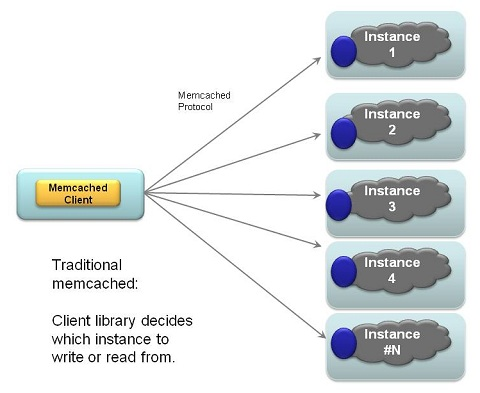
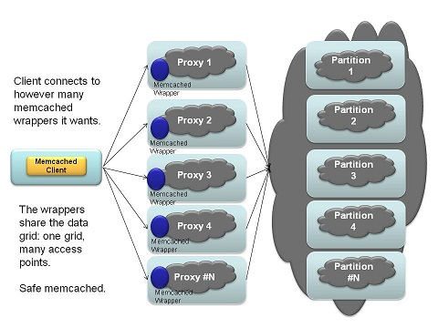
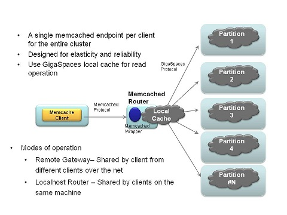
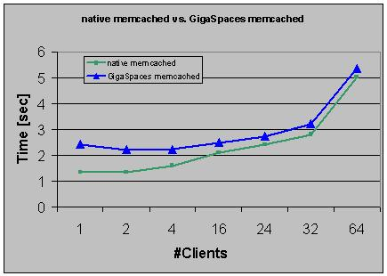

Section Summary: memcached support on top of the space.
Overview
Memcached is a popular caching protocol and server. The integration provided allows to use GigaSpaces as a memcached server (talking the memcached protocol) enhancing the memcached to provide high availability, write behind, and all the other features that come built in with the space.
The memcached support is provided as a template deployment (similar to how basic data grid deployment works), allowing to easily issue commands to deploy a memcached cluster using the CLI, Admin API, or the UI. See "The Runtime Environment" for an explanation of the moving parts and components in a GigaSpaces XAP server instance.
Why use Memcached with GigaSpaces XAP
Memcached is a simple protocol, which makes it naturally cross-platform. This simplicity means a reduction in features, such as failover or distribution of data. The traditional memcached client/server architecture has one memcached client connected to a number of disconnected memcached server instances, which share no data and are entirely unaware of each other.

One deployment model for memcached with XAP has one client connecting to multiple access points, each of which is a XAP node that wraps the XAP datagrid access with the memcached protocol:

This model is a drop-in replacement for the traditional memcached deployment, except it adds fault tolerance and distribution to memcached.
The last deployment model uses a single access point for access - a single node compared to the previous model. This model shares locally cached information from the memcached instance, which reduces the infrastructure impact from duplicated cached data.

Using memcached
Memcached uses a standardized and language-neutral protocol, providing fourteen commands (six reads, two sets, two updates, one delete, and some status-related commands), issued over a plain text connection. A client application can open a telnet session and use a memcached server with no problems (assuming no errors are made in using the protocol, of course.)
However, since the protocol is simple and well-known, there have been many client libraries written that provide access to memcached services.
Using memcached from Java
There are many memcached clients for Java; the one GigaSpaces' example applications have used is xmemcached.
If you use Maven, you can include spymemcached as a dependency, by adding a repository reference and a dependency:
<dependency> <groupId>com.googlecode.xmemcached</groupId> <artifactId>xmemcached</artifactId> <version>1.2.6.2</version> </dependency> |
To connect to a memcached instance, you would first deploy a memcached space in GigaSpaces. For the sake of example, let's assume the memcached instance is deployed on two IPs: 192.168.0.10 (on a server named "memcached1") and 192.168.0.11 ("memcached2").
The code to connect to a server is:
MemcachedClientBuilder builder = new XMemcachedClientBuilder( AddrUtil.getAddresses("memcached1:11211 memcached2:11211")); MemcachedClient c = builder.build();
| Traditional memcached servers shard data by running multiple instances as unassociated peers. Clients connect to each of them, and manually determine which of the server instances data is sent to.
GigaSpaces' memcached service would run access points on each of the servers - memcached1 and memcached2, as shown above - but the servers share data, so you could get the same dataset by just connecting to only one of the server instances. |
Setting data and retrieving it is very simple:
int secondsToLive=60; // 60 seconds c.set("key", secondsToLive, "value"); String value=(String)c.get("key"); // note that async versions of get exist as well
Deploying memcached
Deploying memcached requires a single parameter, which is the space to use for the memcached data. The parameter is the space url, and can either be an embedded space, or a remote connection url to an already deployed url. Here are some examples to deploy memcached using the CLI:
# use the gs-memcached script to start a memcached instance at /./memcached, port 11211 $ gs-memcached.sh # use the gs-memcached script to start a memcached instance at /./newMemcached $ gs-memcached.sh /./newMemcached # deploy a single instance memcached with an embedded space $ gs.sh deploy-memcached /./mySpace # deploy a clustered memcached $ gs.sh deploy-memcached -cluster total_members=2,1 /./mySpace # deploy a memcached with 5 instances connecting to a remote space $ gs.sh deploy-memcached -cluster total_members=5 jini://*/*/mySpace # deploy a memcached instance as local cache connecting to a remote space $ gs.sh deploy-memcached jini://*/*/mySpace
Deploying using the Admin API is similar:
Admin admin = new AdminFactory().addGroup("myGroup").createAdmin(); admin.getGridServiceManagers().waitFor(1); admin.getGridServiceContainers().waitFor(2); ProcessingUnit unit = admin.getGridServiceManagers() .deploy(new MemcachedDeployment("/./test").partitioned(1, 1)); unit.waitFor(unit.getTotalNumberOfInstances()); for (ProcessingUnitInstance instance : unit) { System.out.println(instance.getClusterInfo().getUniqueName() + ": Memcached started on port [" + instance.getMemcachedDetails().getPort() + "]"); } while (true) { Thread.sleep(3000); System.out.println("---------------------------------"); for (ProcessingUnitInstance instance : unit) { System.out.println(instance.getClusterInfo().getUniqueName() + ": Gets [" + instance.getStatistics().getMemcached().getGetCmds() + "]"); } }
memcached Deployment Descriptor
The memcached deployment descriptor looks as follows, for deployment with a GigaSpaces processing unit:
<!--
Spring property configurer which allows us to use system properties (such as user.name).
-->
<bean id="propertiesConfigurer"
class="org.springframework.beans.factory.config.PropertyPlaceholderConfigurer">
<property name="properties">
<props>
<prop key="url">/./memcached</prop>
<prop key="port">11211</prop>
<prop key="portRetries">10</prop>
<prop key="threaded">true</prop>
</props>
</property>
</bean>
<!--
A bean representing an embedded space (an IJSpace implementation).
-->
<os-core:space id="space" url="${url}" versioned="true">
</os-core:space>
<os-core:local-cache id="localCache" space="space">
</os-core:local-cache>
<os-core:giga-space id="gigaSpace" space="localCache" />
<bean id="memcached" class="org.openspaces.memcached.MemCacheDaemon">
<property name="space" ref="gigaSpace" />
<property name="port" value="${port}"/>
<property name="portRetries" value="${portRetries}" />
<property name="threaded" value="${threaded}" />
</bean>
The deployment defined a space, with the provided deployment url (so it can be embedded or remote). It defines a local cache on top of the space, and that local cache is passed to the MemCacheDaemon.
The MemCacheDaemon start listening on the provided port, and if that port is busy, the next port will be used. The daemon accepts different memcached protocol commands, and translates them into operations on the space.
Local Cache
A local cache is started by default on each instance, and works against the whole cluster. Since memcached clients have no concept of routing and how routing is done by the space, a request can hit a certain instance, and be routed to a different space instance. The idea of the local cache is to improve the performance of "get" requests.
Most memcached clients allow to provide a list of memcached servers to connect to. Another improvement that most of them provides us the ability to have consistent hashing of keys to the same server instance. This can result in both high hit rate on the local cache, and less eviction happening.
Performance
The results below compares native memcached with GigaSpaces memcached:

The command used to generate the results is:
memslap --concurrency=$i --test=get --servers=$SERVER:$PORT
Test Setup
- Client: CentOS 5 , 4 x AMD Opteron Dual-core 8220 2.8Ghz , Sun Fire X4600
- memcached Server:CentOS 5 , Intel(R) Xeon(R) CPU X5570 @ 2.93GHz , CISCO USC
- Space Configuration: one instance. No backup. Deploy command:
gs.sh deploy-memcached /./mySpace